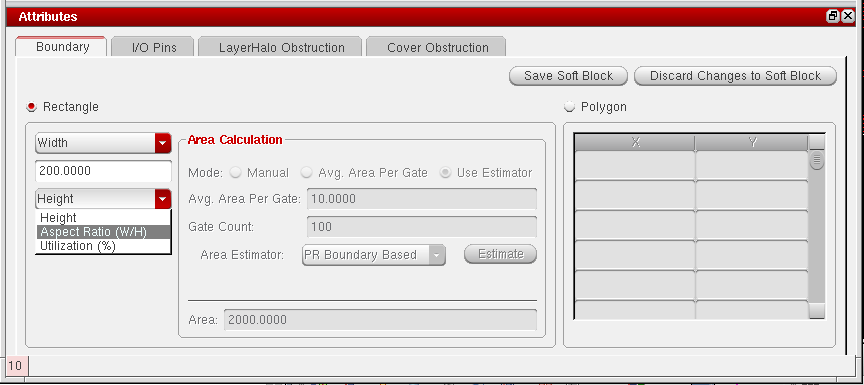

Creating a Fixed Rectangular Boundary
Fixed refers to a boundary defined by specifying a combination of width, height, and aspect ratio. The boundary is considered fixed because it is defined by two fixed variables, and is not derived by estimating the area of the block.
To create a fixed rectangular boundary:
- Select the Rectangle radio button in the Boundary tab.
-
Choose one of the following.
- Aspect Ratio (W/H) in the first cyclic field and Height in the second. In this case, the boundary width is calculated from the boundary height and aspect ratio.
- Aspect Ratio (W/H) in the first cyclic field and Width in the second. In this case, the boundary height is calculated from the boundary width and the aspect ratio.
- Width in the first cyclic field and Height in the second. In this case, the values you type in are used to create the boundary.
The Area Calculation group box is disabled, indicating that area estimation is not required.
 - Type the value you require into each of the fields provided.
-
Type a value in the Rail Height field, if required.The aspect ratio, width, and height values determine the core area, whereas the rail height value is used to extend the total area to accommodate the rails at the top and bottom of the core area. By specifying a rail height in this form, you do not need to calculate the rail area explicitly before populating the GUI.
-
Click Save Soft Block.
The boundary parameters are set. The Attributes pane is disabled and the Instances table re-enabled.
Related Topics
Soft Block Mode in the CPH Window
Return to top